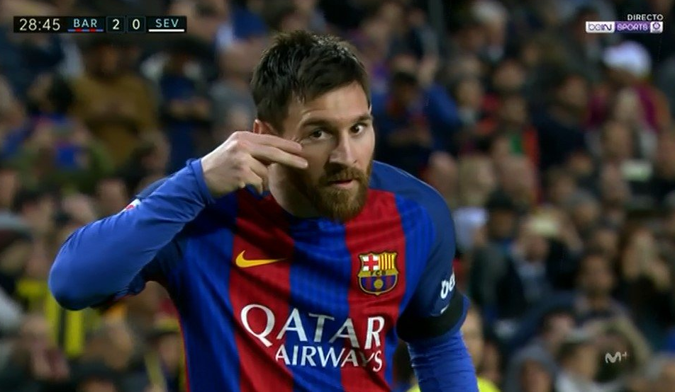
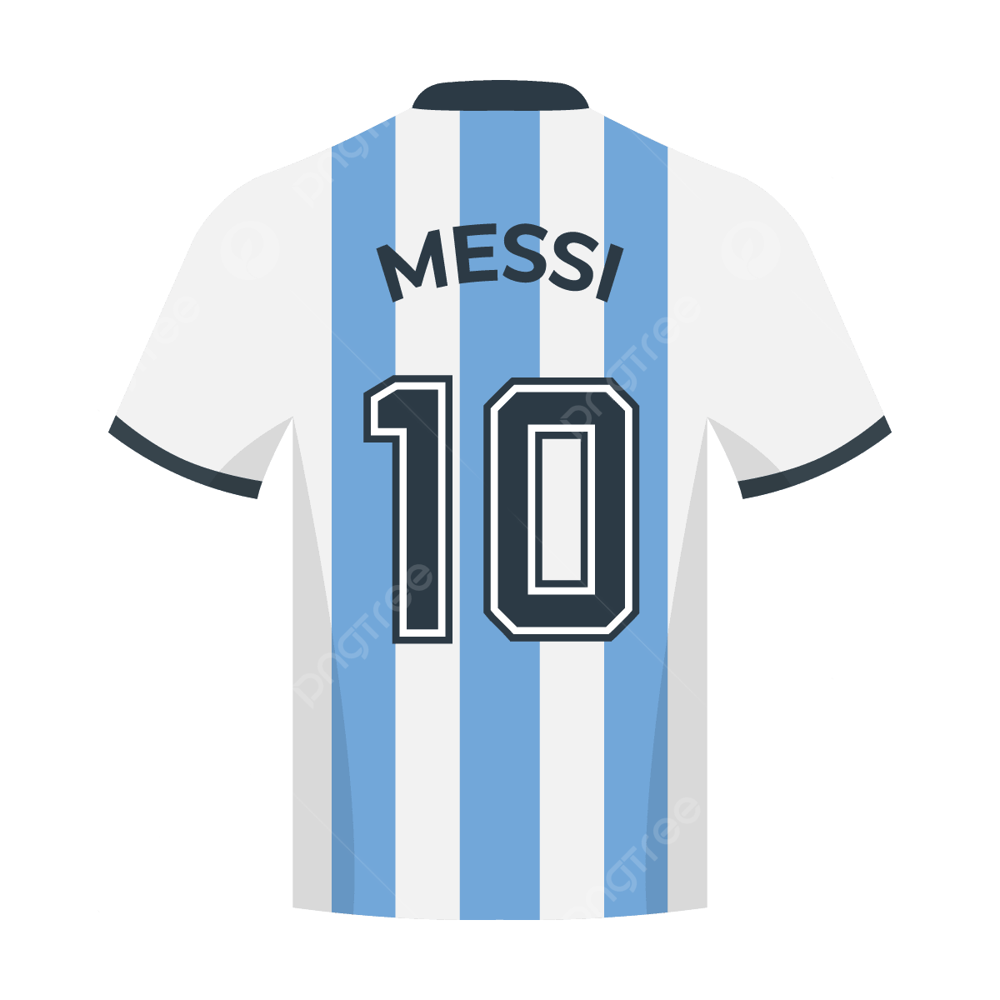

Born 24 June 1987,
Lionel Andrés Messi also known as Leo Messi, is an Argentine professional footballer who plays as a forward for Ligue 1 club Paris Saint-Germain and captains the Argentina national team.

The G.O.A.T.

Widely regarded as one of the greatest players of all time, Messi has won a record seven Ballon d'Or awards, a record six European Golden Shoes, and in 2020 was named to the Ballon d'Or Dream Team. Until leaving the club in 2021, he had spent his entire professional career with Barcelona, where he won a club-record 35 trophies, including 10 La Liga titles, seven Copa del Rey titles and four UEFA Champions Leagues. With his country, he won the 2021 Copa América and the 2022 FIFA World Cup. A prolific goalscorer and creative playmaker, Messi holds the records for most goals in La Liga, most hat-tricks in La Liga and the UEFA Champions League , and most assists in La Liga and the Copa América. He also has the most international goals by a South American male. Messi has scored over 795 senior career goals for club and country, and has the most goals by a player for a single club
Messi relocated to Spain from Argentina aged 13 to join Barcelona, for whom he made his competitive debut aged 17 in October 2004. He established himself as an integral player for the club within the next three years, and in his first uninterrupted season in 2008–09 he helped Barcelona achieve the first treble in Spanish football; that year, aged 22, Messi won his first Ballon d'Or.